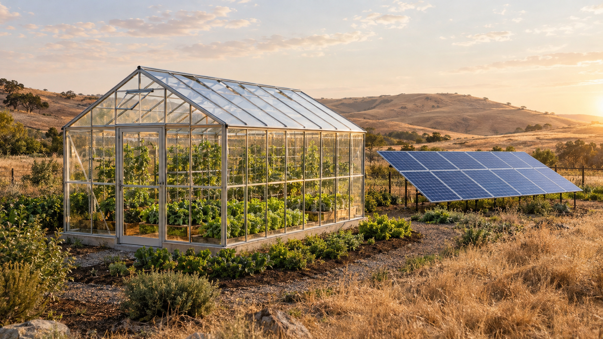

Purpose & Vision
Build one SMART Greenhouse for a water-limited county. Use AI and automation to conserve water, support healthy crops, and demonstrate how technology can support agriculture.
A smarter way to grow green.
SMART Greenhouse combines AI, automated irrigation, and solar energy to help a community grow crops while using less water.

Local water supplies are under growing pressure from drought and rising temperatures. In some areas, data centers add to the demand. Communities still need to grow food. SMART Greenhouse uses AI and automated irrigation to help local growers conserve water. It also gives the community a hands-on way to learn how technology supports agriculture.
Build one SMART Greenhouse for a water-limited county. Use AI and automation to conserve water, support healthy crops, and demonstrate how technology can support agriculture.
A hands-on STEM resource for schools and community groups. Explore AI and sustainable growing while keeping people in control.
Budget and land will be available; permits will be approved on time; contractors and technology components will be available; and the selected community will have a need for the project.
Real-time telemetry, remote actuator controls, live cameras, energy, and instant alerts for greenhouse operators.
Connected Facility
Updated just now
Temperature
24.5°C
Humidity
68%
Soil Moisture
42%
Solar Gen
1.8 kW
Tomato crop health score optimal (98%). No pest signatures detected in sector 2.
Sample feeds. This page does not connect to live greenhouse cameras.
Zone A - Cam 01 · Tomatoes
Daily snapshots feed the AI Plant Health model
Sample mockup feed, not a live greenhouse camera.
Generating solar power
2.4 kW
Solar generation now
Greenhouse using
1.4 kW
Supplied by solar
Battery level
94%
Charging · 1.0 kW
Typical solar output (kW)
Solar is meeting the greenhouse's current demand. Extra energy is charging the battery.
12-panel array
Connection status
10 working · 1 warning · 1 offline
Sample data - see the for details
Panel 9 offline
Critical · Solar · 9:32 AM
Possible leaf yellowing detected on Tomato 4
Warning · AI Plant Health · 9:15 AM
Roof vents opened to 30% - temp above 27°C
Info · Climate · 8:47 AM
Soil moisture low in Bed 2 - irrigation started automatically
Info · Irrigation · 8:20 AM
Daily snapshots saved for Zone A and Zone B
Info · Cameras · 7:58 AM
Sample alerts. Use "Test Push Notification" above to add one.
Tap the tabs at the bottom of the phone to explore each screen.
All readings are simulated. This page does not connect to live sensors, equipment, or cameras.
The mobile app is the one place where growers, educators, and community members check on the whole greenhouse: plant health, watering, energy, and live cameras. It is an Android app (Android 10 and newer) with 2 kinds of accounts. Operators can control equipment, while visitors from school and community groups get view-only access.
Six core functions bring sensor data, controls, alerts, cameras, and energy together in one place.
Temperature, humidity, soil moisture, and solar output in one view. Each reading shows a "last updated" time and an offline warning if a sensor stops reporting.
Operators can switch irrigation, vents, and lighting between Auto and manual. Each command needs a confirmation, shows when the greenhouse controller acknowledges it, and stays within safety limits. A physical manual override remains in the greenhouse.
Push notifications for problems such as dry soil, high temperature, possible plant disease, or an offline panel. Alerts have warning and critical levels, and critical alerts also go out by backup email.
View each zone's camera on demand and save snapshots.
Solar generation, greenhouse usage, battery level, and panel status, from the Solar system.
Role-based access (operator vs. visitor), plus a simplified STEM Learning Mode for student and community workshops.
Sensors and Cameras
Greenhouse Controller
Cloud Database
Mobile App
This is the proposed data flow. All readings on this page are simulated; it does not connect to live sensors or cameras.
Answers reflect the project design and the functionality currently shown in this presentation.
No. The app works anywhere with an internet connection, so growers can check conditions, view cameras, and adjust equipment from home or school.
Operators can view everything and control equipment such as irrigation and vents. Visitor accounts, used by school and community groups, can view data, cameras, and alerts but can't change any settings.
Every remote command asks for confirmation first, and the app shows when the greenhouse controller has received it. Built-in safety limits block unsafe settings, such as running irrigation for too long.
Alerts are sent as push notifications as soon as a reading crosses a set threshold or the AI flags a plant. Critical alerts also go out by email in case a notification is missed.
The app shows the last known readings with an "offline" warning so no one acts on outdated data. The irrigation, vents, and other systems keep running on their local automatic settings, and the manual override still works.
Yes. Cameras can only be viewed by logged-in users, and all connections are encrypted. The feeds on this page are sample mockups.
The first release targets Android 10 and newer. An iPhone version could be added in a later phase.
The app combines data from the other 3 systems: soil moisture and watering from Automated Irrigation, plant health scores and photos from AI Plant Health, and generation and battery levels from Solar Panels.

Our Fully Automated Irrigation System takes the guesswork out of watering. Using intelligent soil moisture sensors and automated water valves, the Smart Greenhouse continuously monitors plant conditions and delivers water exactly where and when it is needed.
Reduce unnecessary water consumption.
Maintain optimal soil moisture levels.
Spend less time manually watering plants.
A straightforward loop: sense what the soil needs, send water where it is needed, and keep an eye on usage.
Step 1
Moisture sensors check the soil around plants. Readings help indicate when moisture falls below the selected watering threshold.
Step 2
Smart valves direct water to the plants or zones that need it, rather than watering every plant on the same fixed schedule.
Step 3
Water-use monitoring can help owners understand their greenhouse’s irrigation needs and how consumption changes over time.
The watering process at a glance
Soil Moisture Sensor
Irrigation Controller
Smart Valve
Plant
This is the proposed system flow. Live sensor and valve telemetry is not connected to this presentation page.
Adjust the example moisture threshold, then preview a cycle. These controls are illustrative and are not connected to greenhouse hardware.
Demo ready
Consistent moisture levels help prevent underwatering and overwatering.
Water is delivered based on soil conditions instead of unnecessary scheduled watering.
Minimize daily maintenance and reduce the need to manually water every plant.
Understand your greenhouse’s water consumption and irrigation needs.
Unlike traditional irrigation systems that rely on preset watering schedules, our Smart Greenhouse responds to real-time soil conditions. This allows plants to receive water based on their individual needs, creating a more efficient and convenient growing environment.
This describes the proposed system approach, not measured performance or a guarantee of savings.
Waters on a fixed schedule
Waters based on soil moisture
Often waters every plant equally
Targets plants that need water
Limited water-use visibility
Tracks water consumption
Requires manual adjustments
Automatically controls smart valves
Can water when it is not needed
Delivers water based on need
A conceptual look at the parts described in the project. Specific product models and specifications have not been selected.
Detect moisture levels in the soil around plants.
Control water distribution to the plants or zones that need it.
Carry water through the greenhouse and deliver it near plant roots.
A planned view of water consumption and irrigation activity; live meter data is not connected in this demo.
Answers reflect the project design and the functionality currently shown in this presentation.
The proposed design uses soil-moisture readings and a selected threshold to guide watering. This web page does not connect to live sensors.
The project describes directing water to plants or zones that need it. Separate plant-specific amounts or profiles are not implemented or confirmed yet.
Water-use visibility is part of the project concept. Live consumption readings are not connected to this presentation page.
The proposed system is designed to automate watering based on soil conditions. The cycle button on this page is only a demonstration; it does not operate a physical pump or valve.
Sensor-failure alerts and backup watering behavior are not specified in the current project demo, so the system’s response has not yet been confirmed.
Offline operation for the irrigation controller has not been specified or tested in the project files, so we cannot confirm its behavior without internet.

Let your greenhouse take care of the watering, so you can focus on growing.
Camera-based visual review helps flag possible signs of plant stress for a grower to assess.
A camera photographs each plant bed every day.
AI flags visible cues such as yellowing, wilting, spots, or possible pest damage.
An alert appears on the dashboard so the grower can check the plant sooner.
Visible changes are flags for grower review, not diagnoses.
Visual stress cues
For grower review
Current demo
Demo mode: sample images
Camera images may show visible signs of stress but cannot measure nutrients. This presentation does not analyze a live camera feed.
Possible visible cues for a grower to check.
Spots or discoloration
Suggested from visible cues, not measured.
Check for discoloration, plant damage, and possible pest signs.
These signs are prompts for inspection, not a diagnosis.
Future analysis could flag possible pest activity and help growers decide what to inspect.
Yield and harvest-window predictions are future enhancements, not current capabilities.
Growing smarter means thinking about energy, too. Our proposed solar system would help power irrigation, plant-health monitoring, and ventilation, with battery storage to make surplus energy useful later.
Use sunlight where your crops grow.
Pair solar with suitable energy storage.
Understand generation and demand.
Project lead: Aiden Lee · Proposed system concept

A connected energy system designed around the equipment that keeps the greenhouse growing.
Photovoltaic panels convert sunlight into direct-current electricity. The layout would be chosen around available space and sunlight, while keeping shade off the growing area.
Compatible power electronics manage the supply. An inverter converts DC power to AC for equipment that needs it; the final design would match each greenhouse load.
When generation exceeds demand, a compatible battery system could store the surplus. Monitoring would show generation, consumption, and battery status together.
A conceptual energy journey. Battery charging depends on available solar power, demand, and storage limits.
Greenhouse Zone A · Sample data
Solar is meeting the greenhouse's current demand. Extra energy is charging the battery.
12-panel array · Sample data
A proposed solar app view with energy data and panel connection status.
2.4 kW generated = 1.4 kW for greenhouse systems + 1.0 kW to battery storage. This simplified balance omits conversion losses and charging limits.
Illustrative snapshot with all three loads active. Actual demand varies with watering schedules and environmental conditions.
Explore examples of working, warning, and offline panels. Individual panel monitoring would require compatible monitoring hardware in the final installation.
Design concept only. All readings are simulated, not live telemetry. Battery storage is shown as a proposed capability; final capacity and power coverage would require engineering validation.
Planned capabilities that connect renewable energy to everyday greenhouse needs.
Supply designated equipment with locally generated solar power when sunlight is available.
Store available energy for later use, within the battery's capacity and power limits.
Compare generation with pumps, sensors, and ventilation to see how equipment affects energy use.
Give schools and community groups a practical way to explore energy storage and sustainable growing.
The proposed system must balance available generation, stored energy, and greenhouse demand throughout the day.
Solar can supply active equipment. Available surplus could charge the battery, subject to its charge rate and remaining capacity.
Lower sunlight can reduce generation. Stored energy could cover some of the gap if the battery has enough charge and output capacity.
Panels no longer generate from sunlight. Equipment would need stored energy or another supply; overnight coverage has not been established.
These readings answer different questions about your system.
A conceptual equipment overview. Product models, panel count, battery capacity, and electrical specifications have not been finalized.
Capture sunlight on a suitable structure. Placement would account for shading, access, and the greenhouse layout.
Compatible inverter and charge-control equipment would manage power conversion, distribution, and battery charging.
Stores energy for later use. Usable capacity and output rating would be selected around designated loads and operating needs.
Measures generation and consumption for the dashboard. Panel-level status depends on the monitoring equipment selected.
The goal is to support designated systems such as irrigation, monitoring, and ventilation. Whole-greenhouse coverage, including any heating or supplemental lighting, has not been established. It depends on a load assessment, local sunlight, and the equipment selected.
No battery capacity or backup runtime has been specified. An estimate would need usable energy in kWh, equipment demand, conversion losses, and the battery's discharge limits. The sample 94% charge reading alone cannot tell us how many hours remain.
Backup operation is a separate design requirement. The project has not confirmed grid connection or outage behavior. The final system would need equipment and controls designed to supply selected loads safely during an interruption.
Owners would check generation trends, battery status, and equipment alerts, and arrange inspections according to the selected manufacturers' guidance. Shading, dirt, and connection issues can affect output. Maintenance procedures and responsibilities would be included in the handover guide.
All readings are fixed examples. The 12-panel grid demonstrates status messages and does not specify the installed panel count. No live sensors, electrical controls, or battery system are connected to this website.
Explore the science: U.S. Department of Energy — Photovoltaic technology basics and Solar energy and storage basics (open in new tabs).
Connect renewable energy with the systems that help your community grow.
Explore the solar demoExplore the eight project phases and expand any phase to see its scheduled tasks.
Float is calculated to the next linked task’s start; the end marker shows when its predecessor must be complete. Day counts exclude weekends; no holiday calendar is applied.
Ordered by estimated impact on project delivery, with approvals and core resources first.
| Stakeholder | Role | Objective | Influence / Interest | Engagement |
|---|---|---|---|---|
| Land Owner | Provide or lease the project site. | Get the best sale price or steady lease income. | Controls site availability and terms; interest is mainly financial. | Discuss terms in person and explain the planned community use. |
| Local Community | Support the project and connect residents with it. | Youth education, local produce, healthy eating, and a gathering place. | Can support or oppose the project; directly affected. | Gather community input and share project updates. |
| Grocery Store | Potential competitor or alliance partner. | Increase profit. | Could compete on crop prices; likely low interest. | Discuss a mutually beneficial partnership early. |
| AI Company | Provide AI services. | Sell its product. | Can restrict service use; interest may be low for a small program. | Explain intended use and confirm a support contact. |
| Funder (government) | Provide project funding. | Ensure the investment benefits the community. | Decides whether to fund; high interest. | Lead with community impact and provide timely updates. |
| Funder (private) | Provide project funding. | Support broader goals and possibly influence outcomes. | Can influence design and outcomes; high interest. | Share the project plan and progress updates. |
| Local Farms | Advise on crops and local growing conditions. | Share knowledge and support student education. | Provides local expertise; participation interest may vary. | Invite input during planning and connect with local farm groups. |
| Water Utility | Approve and guide water access and use. | Conserve water and generate service revenue. | Regulates water access and usage. | Review the plan with utility staff and discuss sponsorship. |
| Government | Issue permits and authorize construction. | Ensure the building is safe and nonhazardous. | Controls permits; may require detailed plans. | Confirm requirements and submit complete materials. |
| Local Schools | Use the greenhouse for lessons and field trips. | Support student learning. | Influences student participation; high interest. | Contact school leaders to plan educational use. |
Identifying possible risks, impact levels, and proactive mitigation strategies.
Select a plotted risk to view its cost, response, and notes. Points with matching scores are slightly offset so each can be selected.
Priority score = probability × impact. Color bands follow the scoring matrix in the risk register workbook.
Expand a feature category to review its risks.
Expand a project area to review task-level expected effort and estimated costs.
Estimated Total Budget
$0
Project labor, contractors, and materials
Expected Task Effort
0 days
Sum of task estimates, not calendar duration
Total
$0
Total with 10% Contingency
$0
Only the workbook’s expected-time estimates are shown; optimistic, plan, and pessimistic estimates are omitted. Cost figures are estimates from the workbook.
Base estimate: $0. Each percentage is a share of the base estimate.
$0
$0
$0
Cost percentages are rounded to two decimal places and may not total exactly 100%.
Each WBS task’s expected duration is calculated as (optimistic + 4 × most likely + pessimistic) ÷ 6. Team labor is estimated at $30 per hour for an 8-hour workday, and contractor labor at $60 per hour.
Key cost risks and their planned responses.
Dedicated domain leads driving the success of the SMART Greenhouse.